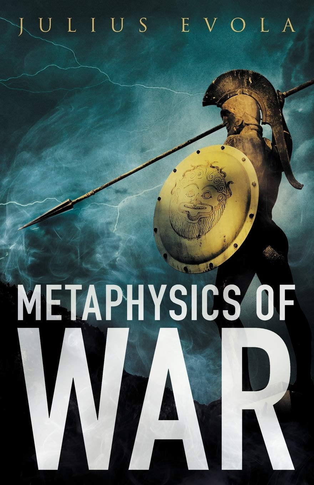

Жанр: Филозофија
Формат: 20x14
Цена: 1.320,00 RSD
Број страна: 172
ID аутора: 398440
ISBN број: 9788660021245
Ово је друго, ревидирано издање књиге „Метафизика битке, победе и смрти у свету традиције“. У овој књизи Евола разматра духовне аспекте рата у
различитим духовним традицијама, укључујући ведску, иранску, исламску и католичку. При томе закључује да рат, у одређеним околностима, може имати
„свети карактер“ кроз који човек може достићи самоспознају. У другом издању додат је велики број нових фуснота и свеобухватан индекс.
Ова збирка есеја бави се ратом из духовне и херојске перспективе. Евола бира конкретне примере из аријевске и исламске традиције како би показао
на који начин традиционалисти могу да се припреме да рат доживе тако да им омогући да превазиђу ограничене могућности живота у нашем материјалистичком
добу, улазећи у свет херојства, односно достижући виши ниво свести и делотворну спознају смисла живота. Међутим, његов позив на деловање није онакав какав
упућују данашње војске, које од својих војника не траже ништа више од тога да постану најамници у служби декадентне класе. Уместо тога, Евола представља ратника
као онога ко живи складним и интегрисаним начином живота — онога ко усваја специфично аријевско виђење света, које политичке циљеве рата не посматра као његово
крајње оправдање, већ само као средство кроз које ратник остварује свој позив ка вишем облику постојања.